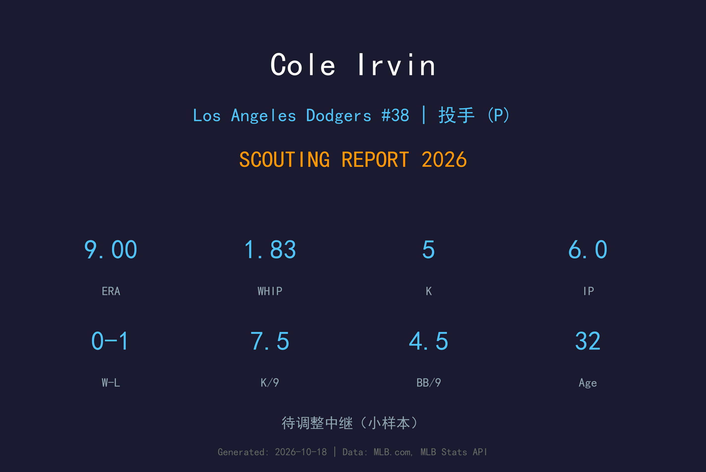
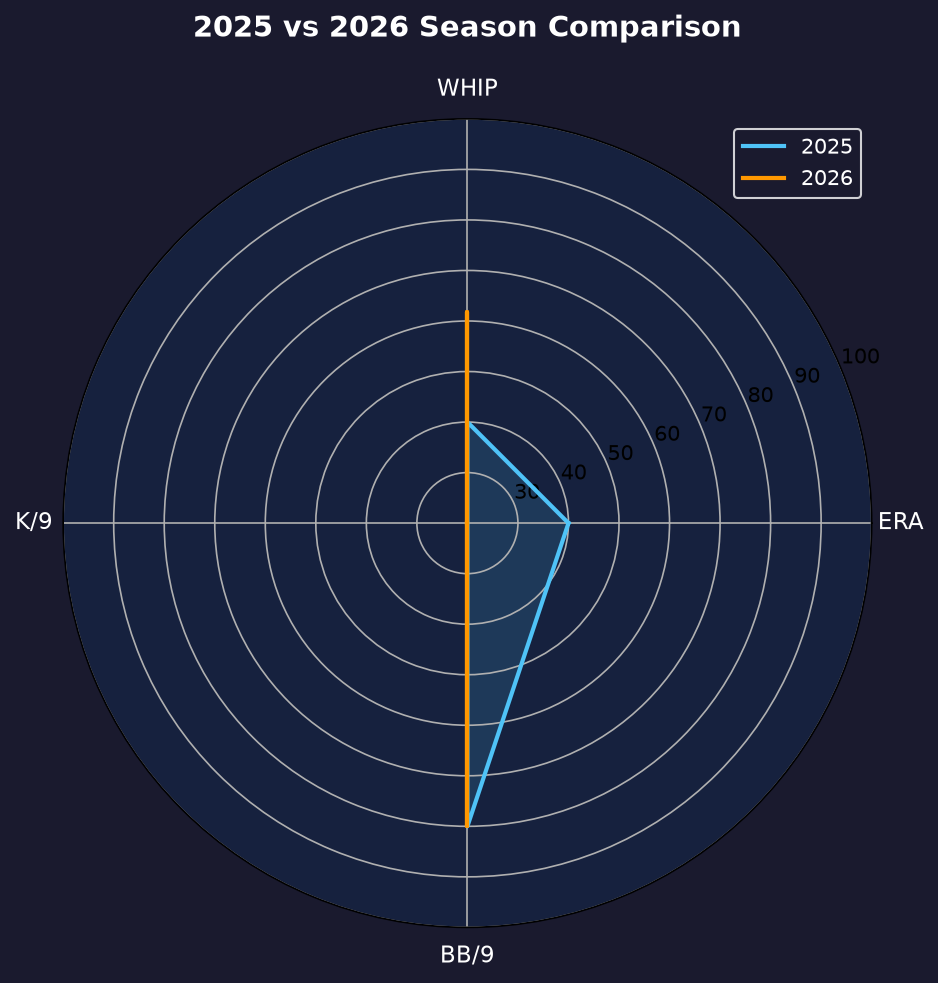
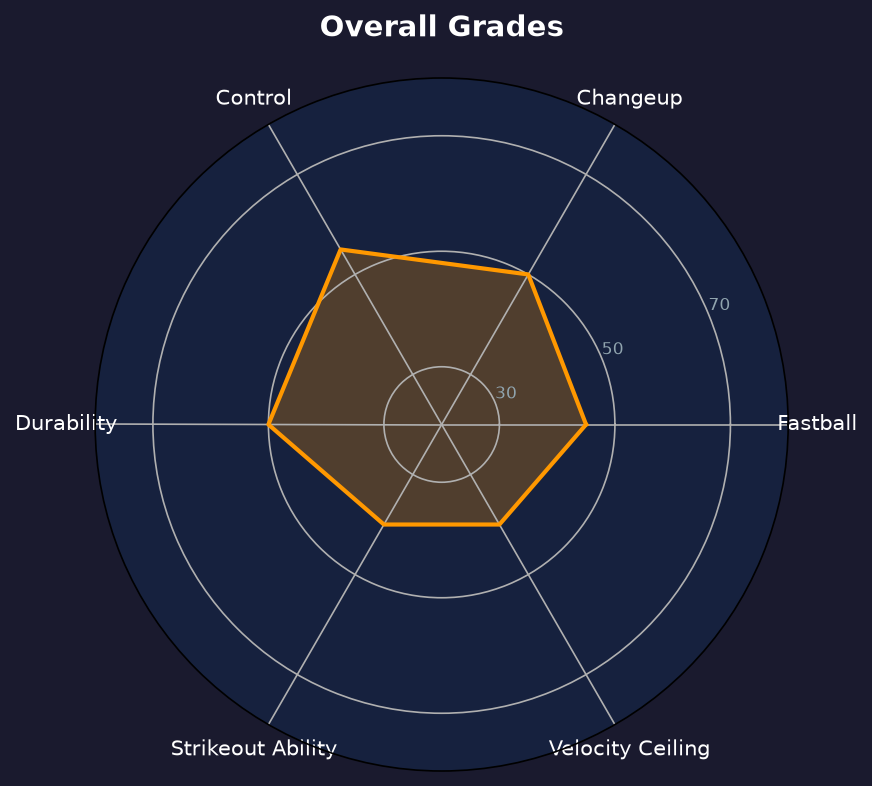

Los Angeles Dodgers #38 | 左投 | 轮换深度型 veteran 左投

Cole Irvin 是一名32 岁的 veteran 左投，生涯 135 场（93 场先发）、28 胜 41 败、4.58 ERA、599 局 439 次三振。他的巅峰在 2021-2022 年的运动家：连续两年单季投满 178+ 局，2022 年更缴出 3.98 ERA、1.16 WHIP 的轮值主力成绩。
2026 年 2 月他与道奇签下小联盟合约，在 3A Oklahoma City 等待了整整五个月，7 月 31 日终于获得一次大联盟机会——后援出赛 6.0 局，被击出 8 支安打（含 1 轰）、失 6 分，吞下败投，ERA 9.00。隔天他就被 DFA，8 月 3 日 outright 回 3A，此后再未回到大联盟。
Irvin 的武器库以 90-92 mph 快速球搭配变速球与滑曲球，靠控球与配球而非球速生存。这类"innings eater"型左投的市场在近年急剧萎缩，他的道奇之旅是 2026 年大联盟生态最真实的注脚。
2016 年选秀第 5 轮被费城人选中，2019 年 5 月 12 日完成大联盟首秀，当年 16 场出赛（3 场先发）。
转战奥克兰后首次完整赛季：32 场全部先发，178.1 局、10 胜 15 败、4.24 ERA、125 三振，生涯首个双位数胜场赛季。
30 场先发、181.0 局（生涯最高）、9 胜 13 败、3.98 ERA、1.16 WHIP、128 三振——生涯最佳 WHIP 与局数，奠定"可靠轮值左投"的市场定位。
2023-2024 年在巴尔的摩先发与中继之间摇摆，2024 年季中被送到明尼苏达；2025 年整季未登大联盟，在小联盟寻找机会。
2 月签小联盟合约，7 月 31 日登上大联盟投 6 局（9.00 ERA 吞败），8 月 1 日即被 DFA，8 月 3 日 outright 回 3A Oklahoma City，此未再回归。
极小样本：唯一一次登板投满 6 局——大概率是双赛或轮值空缺时的 spot 长中继。8 安 6 失分（含 1 轰）的成绩单直接决定了他的去留。

| 赛季 | 球队 | G | GS | IP | ERA | WHIP | K | BB |
|---|---|---|---|---|---|---|---|---|
| 2022 | Oakland Athletics | 30 | 30 | 181.0 | 3.98 | 1.16 | 128 | 36 |
| 2024 | BAL / MIN | 29 | 16 | 111.0 | 5.11 | 1.45 | 78 | 29 |
| 2026 | Los Angeles Dodgers | 1 | 0 | 6.0 | 9.00 | 1.83 | 5 | 3 |
从 2022 年的 181 局轮值主力到 2026 年的 6 局后援，Irvin 的四年轨迹是大联盟"控球型 soft-tossing 左投"被市场淘汰的缩影。2025 年零大联盟出赛，2026 年只有这一张 9.00 ERA 的成绩单——他的生涯大概率已接近尾声。
Irvin 的四缝线快速球 90-92 mph，卡特球与变速球是主要变化球，搭配滑曲球作为配速。他的 K/9 生涯仅 6.6，生存逻辑是让打者击出软弱击球、快速解决局数。这种打法在 2021-2022 年还能吃掉 180 局，但随着联盟火力升级和速球均速通胀，他的边缘越来越薄。
7 月 31 日的登板结构很说明问题：6.0 局、8 安、1 轰、6 失分——这是"innings eater"的标准死法：球进垒点稍偏就被连续击中，没有三振能力脱困。道奇给了他五个月的小联盟耐心，但这 6 局用完即弃，是市场给他的最后评语。
8 月 3 日 outright 后，Irvin 在 3A 没有再获得召唤。道奇轮值后期由新秀与交易补强的 Snell、Skubal、Bubic 等人填满，深度名单上已没有"控球型老将左投"的位置。32 岁的他若想延续，下一站可能是海外联盟或竞争更小的球队。

被时代淘汰的控球型轮值左投
C+ 级 / 轮值深度
Irvin 的 2027 年选择有限：继续小联盟合约等待几乎不会来的电话、转往海外联盟（日韩职棒对这类左投有一定需求）、或考虑退役转型。599 局的大联盟生涯已经是多数投手梦寐以求的成绩单，但 2026 年那 6 局 9.00 ERA 很可能就是终点。
2026：2/3 小联盟合约加盟；7/31 唯一一次大联盟登板（6.0 局 9.00 ERA 吞败）；8/1 DFA、8/3 outright 回 3A，此未再回归
2027：海外联盟或退役转型，大联盟回归概率极低
Cole Irvin 1994 年 1 月 31 日出生于加州安纳海姆，高中时就读于当地的 Servite High School。2016 年 MLB 选秀，费城费城人在第 5 轮选中了这位 6 尺 4 寸的左投。他在小联盟稳步爬升，2019 年 5 月 12 日完成大联盟首秀。
Irvin 的生涯转折点是 2021 年：被交易到奥克兰运动家后，他第一次获得完整轮值机会，当年吃下 178.1 局、10 胜。2022 年更是投出 181 局、3.98 ERA 的生涯最佳成绩——那是控球型左投在"三振至上"时代来临前的最后辉煌。2023 年起他被交易到巴尔的摩金莺，角色在先发与长中继间摇摆；2024 年季中被送到明尼苏达双城，此后便一路下行：2025 年整季未登大联盟，2026 年 2 月接受道奇的小联盟合约时，已是他职业生涯的背水一战。
五个月的小联盟等待换来一次 6 局登板——8 支安打、6 分、9.00 ERA、一场败投。隔天，他出现在 DFA 名单上。Irvin 的故事没有奇迹，只有一个职业投手在时代变迁中的安静落幕：他曾是能投满 180 局的可靠左投，而当大联盟不再奖励这种投手时，连告别都只有 6 局。